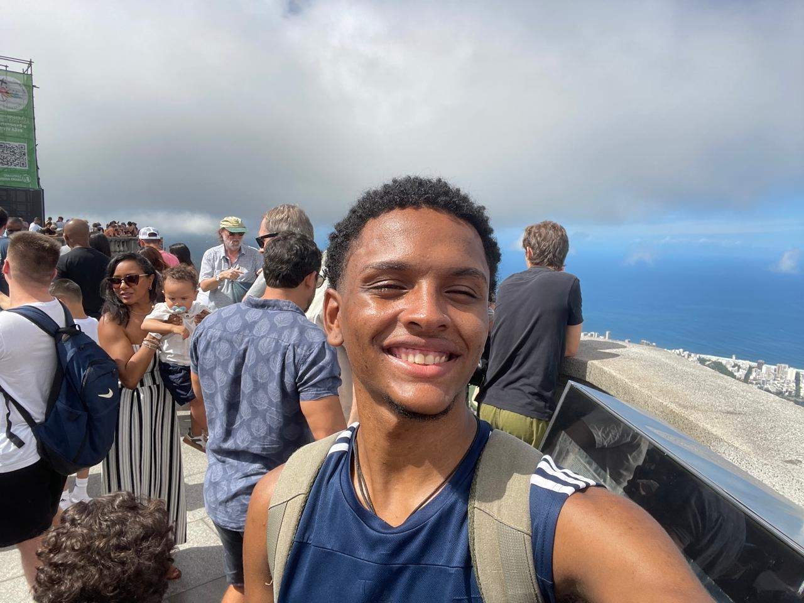

Nicolas
Marca & Design
Meu nome é Nicolas, faço Ciência da Computação no IC-UFRJ. Sempre gostei muito de robótica — cheguei a querer fazer curso na adolescência — e a OCTO foi uma forma de ficar mais perto desse mundo. Não atuo na confecção do protótipo, porque minhas habilidades gritam mais no lado visual da equipe, e isso mostra como na OCTO perfis diferentes se conectam pelo mesmo objetivo: vencer na maior competição, sendo da maior federal do Brasil. Na equipe, pude colocar minha criatividade em prática e alcançar ótimos resultados em conjunto. Meu desejo é que a OCTO conquiste muitas vitórias e que eu sinta cada vez mais a sensação de pertencimento que o empenho coletivo traz.